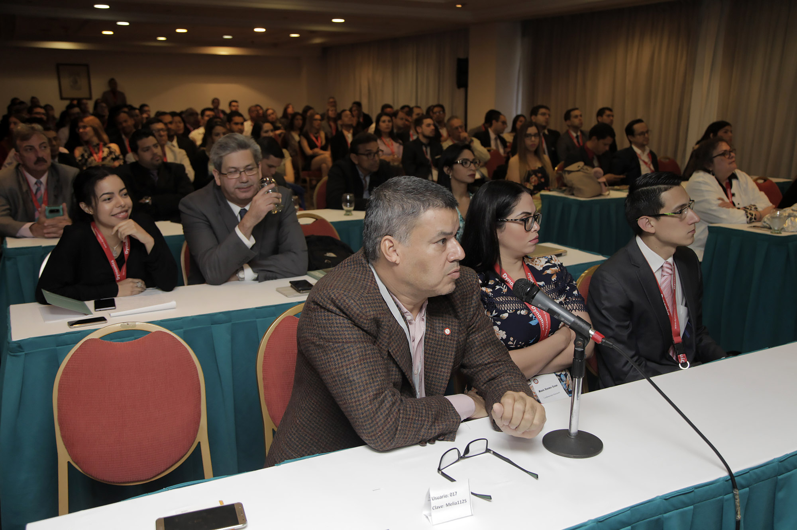

|  | La Junta Directiva de la Sociedad Venezolana de Cirugía y el Comité Organizador de la LXXII Jornada Nacional de Cirugía, ya han iniciado sus reuniones y actividades para elaborar el programa de este evento, jornada que realiza la Sociedad cada dos años y que en esta oportunidad será desarrollada en la ciudad de Caracas, los días 3 y 4 de julio de este año. Esta Jornada será en honor al Dr. Pablo Briceño Pimentel, gratamente recordado expresidente de la SVC y pionero de la cirugía laparoscópica en Venezuela, por lo que será el epónimo de la Jornada, la cual será orientada fundamentalmente en los avances en la cirugía de mínimo acceso, por lo que hemos ideado para este evento el lema “La visión del cirujano a través de una óptica”. A pesar de las dificultades por la que estamos atravesando en el país, es nuestro propósito la realización de esta actividad y para ello estamos trabajando arduamente. Esperamos contar con la colaboración y asistencia de nuestros miembros, así como de residentes, colegas médicos y estudiantes de medicina. Por lo antes expuesto, tenemos el placer de invitarlos muy cordialmente a que participen en esta LXXII Jornada Nacional de Cirugía, los días 3 y 4 de julio de 2019 en la ciudad de Caracas. |